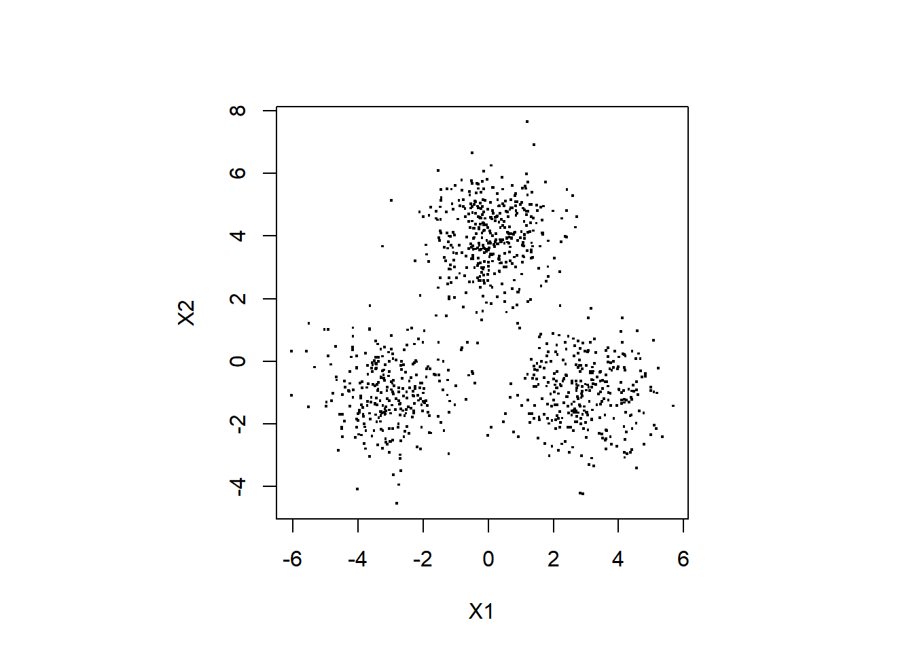
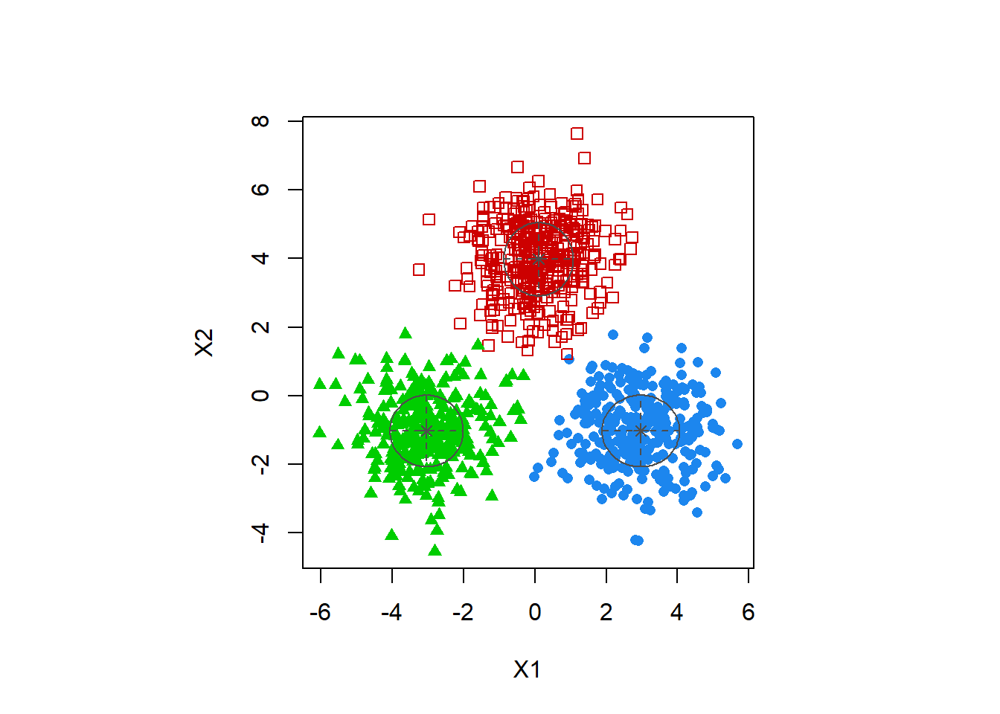
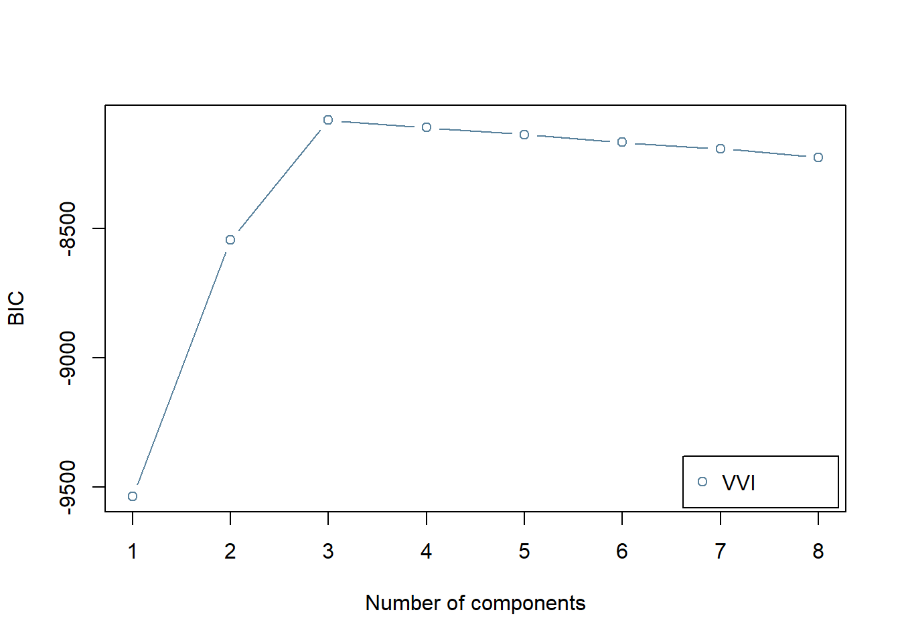

(2019/09/01 作成中)
ここでは，MClustパッケージを使った混合正規分布モデル (Gaussian Mixture Model, GMM) のフィッティングの方法を解説します。
本ページで使用するパッケージがインストールされていない場合は，以下の コマンドをコンソールに入力してインスト―ルしてください。
install.packages("mclust")
install.packages("mvtnorm")以下の2行で必要なパッケージを読み込みます。
library(mvtnorm)
library(mclust)ここでは，デモに使うデータを生成します。 データは3つのコンポーネントからなる，2次元の混合正規分布から 生成します。
# 乱数のシードを設定
set.seed(1)
# サンプル数
n.sample <- 1000
# true parameters ---------------------------
# 3つのコンポーネントからなる正規分布を想定する
# 各コンポーネントの平均，分散・共分散行列を設定
true_means <- list(c(0,4), # コンポーネント1の平均ベクトル
c(-3,-1), # コンポーネント2の平均ベクトル
c(3,-1) # コンポーネント3の平均ベクトル
)
true_sigmas <- list(diag(2), # コンポーネント1の分散・共分散行列
diag(2), # コンポーネント2の分散・共分散行列
diag(2) # コンポーネント3の分散・共分散行列
)
# 混合比を設定
true_pi <- c(0.4,0.3,0.3)
# データを生成
dat <- matrix(0,nrow = n.sample, ncol = 2)
for (idx in 1:n.sample) {
# 選択するコンポーネントのインデックス
idxk <- which.max(rmultinom(1,1,true_pi))
dat[idx,] <- rmvnorm(n = 1,
mean = true_means[[idxk]],
sigma = true_sigmas[[idxk]] )
}
# データフレームに格納
df_data <- data.frame(dat)データが正しくデータフレームに格納されているか，以下で確認します。
dim(df_data)## [1] 1000 2head(df_data,5)| X1 | X2 |
|---|---|
| 3.1836433 | -1.835629 |
| 0.4146414 | 2.460050 |
| -3.2947204 | -1.005767 |
| -0.3053884 | 5.511781 |
| -1.1476570 | 3.710538 |
生成したデータを以下でプロットしてみます。
par(pty = "s")
plot(df_data$X1, df_data$X2, pch=".",cex = 2, xlab="X1", ylab="X2")
mod1 <- Mclust(df_data, # データ
G = 3, # コンポーネント数
modelNames = "VVI" # モデルの分散・共分散行列の構造
)## fitting ...
##
|
| | 0%
|
|================================ | 50%
|
|=================================================================| 100%以下で，GMMの結果を表示します。
par(pty = "s")
plot(mod1, what = "classification")
summary(mod1, parameters = TRUE)## ----------------------------------------------------
## Gaussian finite mixture model fitted by EM algorithm
## ----------------------------------------------------
##
## Mclust VVI (diagonal, varying volume and shape) model with 3 components:
##
## log-likelihood n df BIC ICL
## -3992.456 1000 14 -8081.621 -8094.734
##
## Clustering table:
## 1 2 3
## 316 389 295
##
## Mixing probabilities:
## 1 2 3
## 0.3156217 0.3900837 0.2942947
##
## Means:
## [,1] [,2] [,3]
## X1 2.965384 0.1003968 -3.037861
## X2 -1.024736 3.9786605 -1.023301
##
## Variances:
## [,,1]
## X1 X2
## X1 1.183891 0.000000
## X2 0.000000 1.079962
## [,,2]
## X1 X2
## X1 0.9567944 0.000000
## X2 0.0000000 1.145215
## [,,3]
## X1 X2
## X1 1.056571 0.000000
## X2 0.000000 1.095422きれいに3つのコンポーネントが推定され，各サンプルが正しくクラスタリングされていることがわかります。
BICにより，コンポーネント数を選択します。
BIC <- mclustBIC(df_data,
G = 1:8, # 候補となるコンポーネント数
modelNames = "VVI"
)## fitting ...
##
|
| | 0%
|
|======= | 11%
|
|============== | 22%
|
|====================== | 33%
|
|============================= | 44%
|
|==================================== | 56%
|
|=========================================== | 67%
|
|=================================================== | 78%
|
|========================================================== | 89%
|
|=================================================================| 100%plot(BIC)
BICは標準的には小さい方が良いモデルとなる指標なのですが， MClustでは符号を逆にして，大きい方が良いモデルとなるようにしているようです。 真のモデルと同じ，コンポーネント数が3のときにBICの値が最大となり，最適なモデルとして選択されます。
BICで選択されたモデルでモデルフィッティングをするときは以下のようにします。
mod2 <- Mclust(df_data, x = BIC)